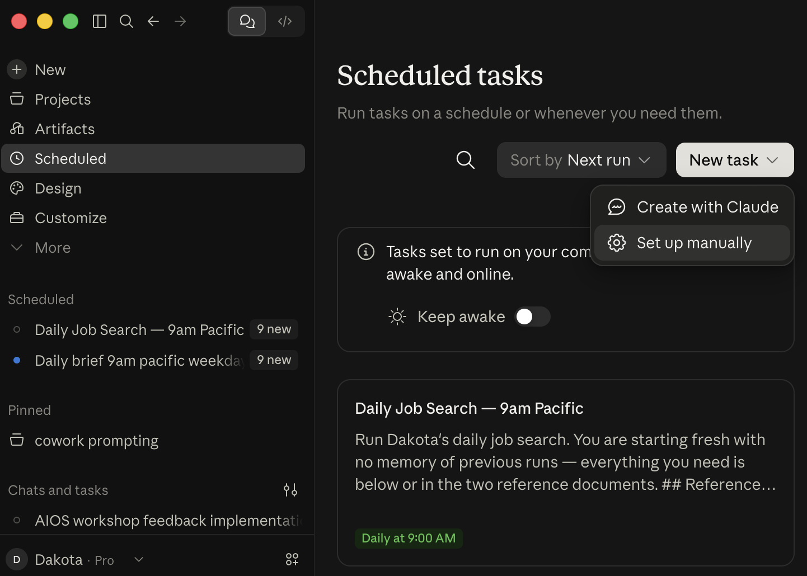

Sizing GuidePrompt ⑧Margins, fonts, spacing that fit one page
Step 0 done: folder has Resume + Resume Template
Icons should be blue Docs, not red PDF or Word.
How to read this guide
Grey box
Paste exactly, one at a time. Let the AI finish first.
[brackets]
Fill in your info.
NEW CHAT
Start a fresh chat. Long chats waste usage and get sloppy. Your work is in Drive.
SAME CHAT
Stay in this chat.
SETTINGS
Paste into settings, not a chat.
YOU DO THIS
Manual step, no prompt.
Each prompt ends with a recap and your next step.
PART 1
Your daily job search
~50 min · tracker → ME → skill → run → schedule
Step 1 · Tracker~5 min
①
Make your tracker
NEW CHAT
Paste this
Create a Google Sheet called "Job Tracker" in my "AI Job Search" Google Drive folder with two tabs.
Tab "Roles", columns: Company, Role, Status, Date Found, Date Posted, Link, Fit, Timeline, Location, Source, Notes.
Tab "Run Log", columns: Run Date, Search Window, Searches Run, New Roles Added, Notes. Leave it empty.
Then search my Gmail from the last 2 months for application emails. Confirmations ("thanks for applying," "application received," "thank you for your interest") go in Roles with Status = Applied. Rejections go in with Status = Rejected. Use the email's date, Source = Gmail, one row per role. If you find nothing, say so and ask me to list any applications I remember.
When you're done, give me 3-5 short bullets on what you created and how many rows you added, flag anything you weren't sure about, and end with "Next:" telling me to open a new chat and paste prompt ②.
Check the Sheet
Fix wrong rows by hand.
Step 2 · ME~15 min
②
ME interview
NEW CHAT
Paste this
Read my "Resume" Google Doc in my "AI Job Search" Drive folder. Then interview me to write my "ME" doc. Ask one question at a time and wait for my answer (15 questions max). If an answer is vague, ask one follow-up (for example, "anything in tech" → which 2-3 roles?).
Cover: my phone, email, LinkedIn URL, and city; grad date or years of experience; my top 2-3 target roles plus adjacent roles I'd take; level (internship, new grad, experienced) and when I can start; locations and on-site, hybrid, or remote; company size or stage; industries I want and ones I'd avoid; my pay floor; whether I'll need visa sponsorship; dealbreakers; 5-10 dream companies; my 2-3 strongest skills or stories; and how I want you to answer me (length, tone, how blunt).
Then, from my resume and answers, propose my Honest fit bar: one sentence on what level of role my resume qualifies me for today. Be realistic, not flattering. Ask me to confirm or adjust it.
Write the doc in under 450 words with these headings: Contact, Background, Target roles, Timeline, Locations, Company preferences, Dealbreakers, Dream companies, Strengths, Honest fit bar, How I want answers. Save it as a Google Doc called "ME" in the same folder.
When you're done, give me 3-5 short bullets on what you saved, and end with "Next:" telling me to paste prompt ③ into my custom instructions (not into a chat).
When I ask about jobs, applications, or my resume, first read my "ME" doc, "Job Tracker" sheet, and "Bullet Bank" doc (once it exists) in my "AI Job Search" Google Drive folder, and follow ME's rules. After any multi-step task, end with a short bullet recap of what you did and what I should do next.
Step 3 · Build the job search~5 min to build · ~10 min first run
④
Build the daily-job-search skill
NEW CHAT
Paste this
Create a skill called daily-job-search that runs when I say "run my job search." Write it so it works in a brand-new chat with no memory of this one. The skill must:
1. Read my "ME" doc and both tabs of my "Job Tracker" sheet in my "AI Job Search" Google Drive folder.
2. Set the search window. If the Run Log tab is empty, this is my first run: find roles posted in the past 14 days. Otherwise, find roles posted since the most recent Run Date (usually the past 1-2 days, never more than 14), so searches never overlap or leave gaps.
3. Run up to 15 web searches for my target roles, level, locations, and timeline. Include site:boards.greenhouse.io, site:jobs.lever.co, and site:jobs.ashbyhq.com, my dream companies' career pages, and GitHub job lists (like SimplifyJobs'). Never scrape LinkedIn or Handshake.
4. Open each posting to confirm it's live and find its posted date. If it won't open, try the Greenhouse, Lever, or Ashby job API; still nothing? Mark it Unverified. Keep only roles posted inside the window. No date shown? Keep it only if it isn't already in my tracker, and write "date unknown."
5. Skip anything already in my Roles tab (same company and role, or same link), closed, or hitting a dealbreaker.
6. Score fit 1-10 against my Honest fit bar with one line why. A 4 is a 4. Don't pad the list; two strong roles beat ten weak ones.
7. Add each new role to Roles with Status "Not applied," Date Found = today, Date Posted, and Source. Add one Run Log row: today's date, the window, searches run, new roles added.
8. Deliver an HTML briefing, self-contained with inline CSS (Claude: as an artifact; ChatGPT: in canvas or as a downloadable .html file). Style: off-white page, one centered 800px column, clean sans-serif font. Header: "Job Search Briefing," the date, and a one-line summary, over a thick dark rule. Small uppercase grey section labels. Each role is a white card with rounded corners, a thin border, and a colored left edge with a matching fit badge (green 7-10, amber 5-6, red 1-4), then a large green "View posting →" button. Sections, in order: Summary (window searched, new roles found, top pick); New roles ranked by fit, grouped by timeline (each card: role, company, fit, location, date posted, source, one-line why); Check manually (a LinkedIn link for each target role and city, filtered to the same window by adding &f_TPR=r[window in seconds], plus a reminder to check Handshake); What didn't work (sites that wouldn't open); and a footer with the window, searches run, and tracker row count. Nothing new? Say so in a short briefing in the same style.
Put the full HTML and CSS template inside the skill so every briefing looks the same. Never apply to jobs or email anyone.
Then give me the skill to install (Claude: a skill file; ChatGPT without Skills: text for a Project's instructions). When you're done, give me 3-5 short bullets on what the skill does, then "Next:" with the exact install steps for my tool, and tell me to open a new chat and type "run my job search."
Install: Claude: Customize → Skills → upload. ChatGPT: Skills (beta), or paste into a Project's instructions and search inside it.
First run
NEW CHATYOU DO THIS
Type: run my job search. First run covers 14 days and takes a few minutes. Later runs cover only new days.
Check the briefing:
Fix what's off
SAME CHAT
Paste this
Update daily-job-search to always [your fix, e.g. "skip roles that need 3+ years of experience"]. Give me the new version, then 3 bullets on what changed and "Next:" with how to reinstall it.
Step 4 · Put it on a schedule~3 min
⑤
Schedule the daily run
SETTINGS
Claude: Scheduled tasks → new task · ChatGPT: Tasks. Pick a time before you wake. Paste:

Claude: Scheduled → New task.
Paste as task prompt
Run my job search using my daily-job-search skill. Use the window from my Run Log (since the last run) so nothing overlaps. Don't apply to anything or email anyone. Deliver the HTML briefing, then 3 bullets: how many new roles, the top pick and why, and anything that broke.
Scheduled run can't reach Drive or your skill?
Run it by hand: new chat → run my job search. The Run Log prevents repeats.
PART 2
Your resume tailor
~45 min · bullets → tailor → sizing → skill → test
Step 5 · Bullet bank~15 min
⑥
Build your bullet bank
NEW CHAT
Paste this
Read my "Resume" Google Doc and my "ME" doc in my "AI Job Search" Drive folder. Build a bullet bank: every bullet on my resume, plus new ones.
First, interview me one question at a time (10 questions max) about work that isn't on my resume yet, and about bullets missing a number: projects, clubs, part-time jobs, volunteering, results, tools I used, team size, how often, for whom.
Then write 3-5 bullets for every job, club, and project, grouped under each one's title, organization, dates, and city (ask for any that are missing). Add my school, degree, and grad date, and a Skills list. Write every bullet in Google XYZ form with the number in the first few words: "Grew X by [number] by doing Z." Never invent a number; write [#?] where one is missing.
Save it as a Google Doc called "Bullet Bank" in "AI Job Search."
When you're done, give me 3-5 short bullets: how many bullets each role got, which roles are thin, and how many [#?] gaps there are. End with "Next:" telling me to fill any [#?] I can in the Doc, then open a new chat and paste prompt ⑦ with job description #1.
More bullets than fit is the point. The tailor picks.
Step 6 · Tailor, capture, test~30 min
⑦
Tailor once, by hand
NEW CHAT
Paste this + job #1
Tailor my resume to the job below. From my Bullet Bank, give every role 2-4 bullets, strongest first; a true, less on-target bullet beats a role with only one. Under 2 true bullets for a role? Keep what's real and tell me which. Rewrite each in the posting's language: one line, XYZ form, number or result in the first 8 words (no real number, or a [#?]? Lead with scope: how many, how often, for whom). Never invent a number, title, tool, or date; keep titles and dates exactly as in my bank; never repeat a result.
Then make a Google Doc "Resume - [Company] - [Role]" in my "AI Job Search" folder, matching my "Resume Template" Doc's layout and formatting. Top: my name, then phone | email | LinkedIn | city from ME. Headings: EDUCATION, WORK EXPERIENCE (jobs), LEADERSHIP & PROJECTS (clubs, projects), SKILLS (2-3 one-line rows, no Interests). Cut lines I lack info for.
Then fit it to exactly one page: nothing wraps to a second line, no gap at the bottom. Too long? Cut the weakest bullet (keep 2+ per role), then words, then margins (min 0.5") or font (min 10pt). Too short? Add true bullets from my bank; out of good ones, raise font and spacing a step at a time until it's full (max 12pt).
When you're done, give me 3-5 short bullets on what you changed, a one-line tagline in the posting's language, and 3 keywords from the posting I'm missing. End with "Next:" telling me to open the Doc, check it, and tell you what to fix in this same chat.
[paste job description #1]
Correct it at least once SAME CHAT
Say what's wrong in plain words. Fixes go into the skill in ⑨.
⑧
Lock the sizing
SAME CHAT
Paste this
It fits. Save a Google Doc called "Sizing Guide" in my "AI Job Search" folder: margins, font and size for each part (name, headings, role lines, bullets), spacing, and the longest bullet that fit on one line. Add one step smaller and one step larger (text ±0.5pt, spacing ±2pt). Future resumes add good bullets first, then use the step that fills the page. When you're done, give me 2-3 bullets on what you saved and "Next:" telling me to paste prompt ⑨ in this same chat.
⑨
Save it as a skill
SAME CHAT
Paste this
Turn this into a skill called tailor-resume, with every correction I made in this chat. It reads my "Sizing Guide," "Bullet Bank," "ME," and "Resume Template" first. It runs when I paste a job and ask to tailor my resume. Give me the skill to install (Claude: a skill file; ChatGPT without Skills: text for a Project's instructions). When you're done, give me 3-5 bullets on what the skill does and "Next:" with the exact install steps, then tell me to test it in a new chat with a different job description.
Test
NEW CHATYOU DO THIS
Paste job description #2, then type: tailor my resume for this
Check:
⑩
Fix
SAME CHAT
Paste this
Update tailor-resume to always [your fix]. Give me the new version, then 3 bullets on what changed and "Next:" with how to reinstall it.